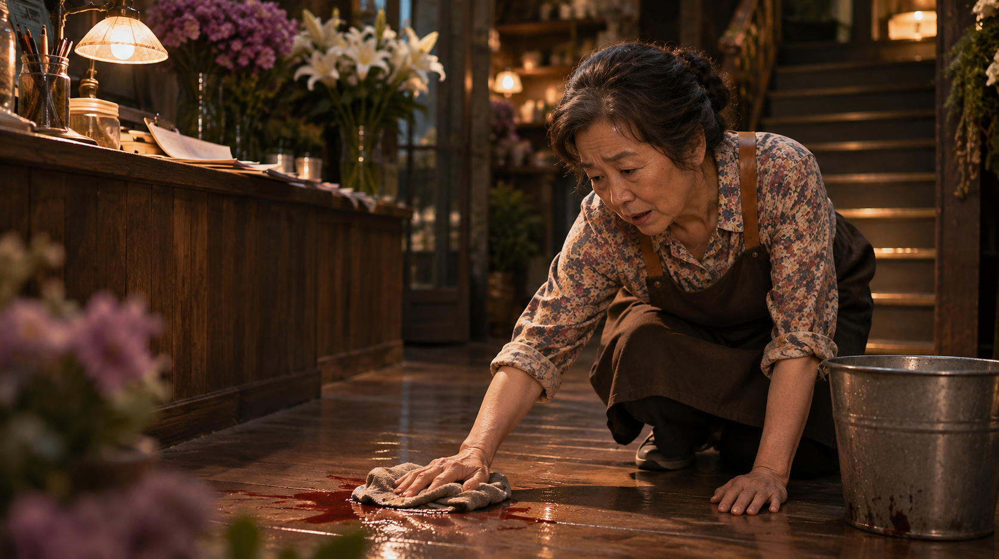
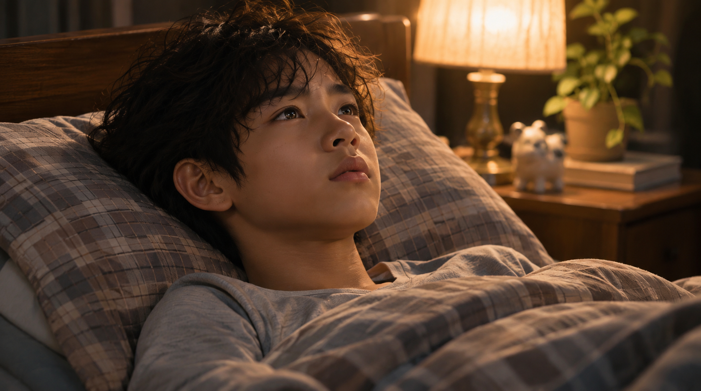
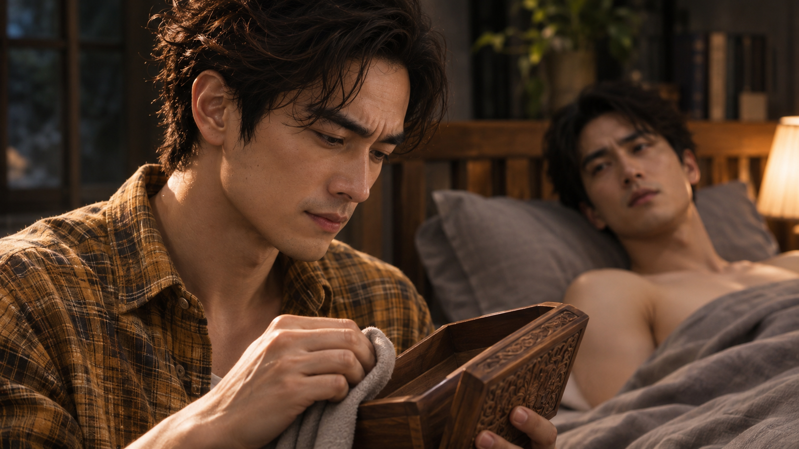
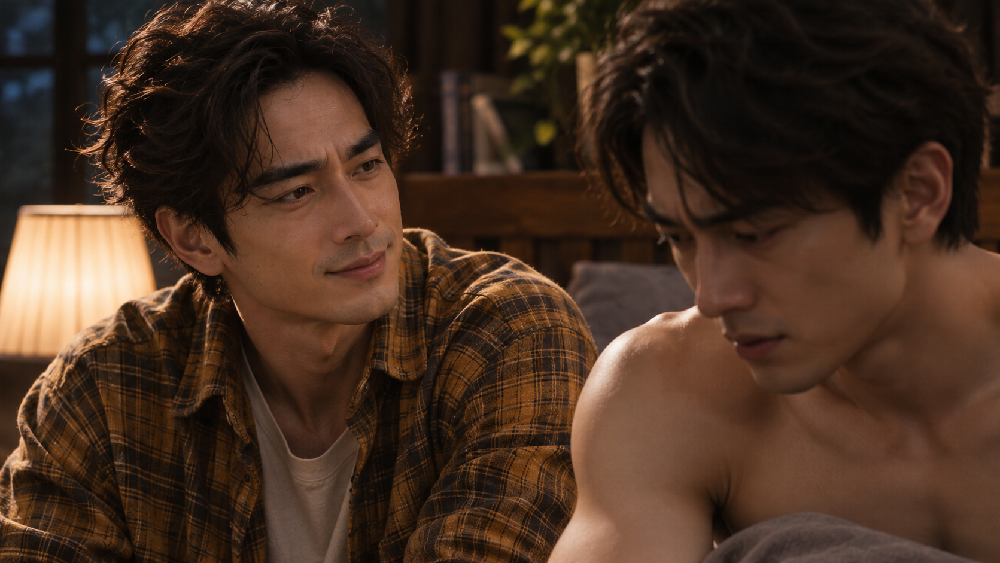
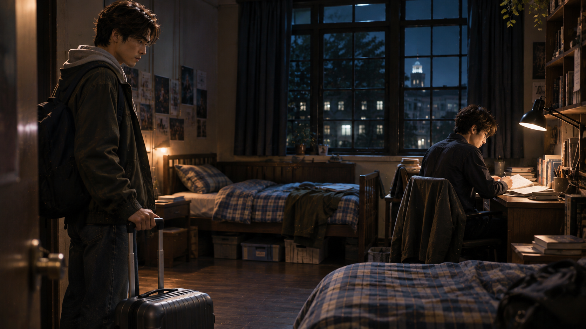
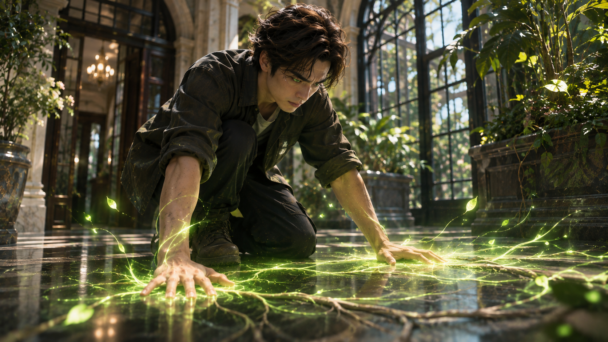
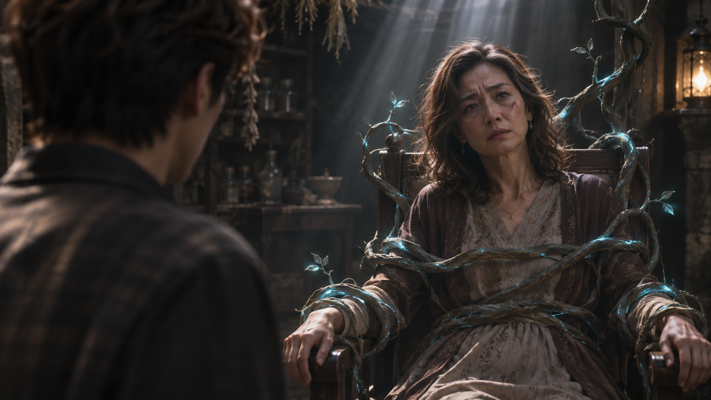
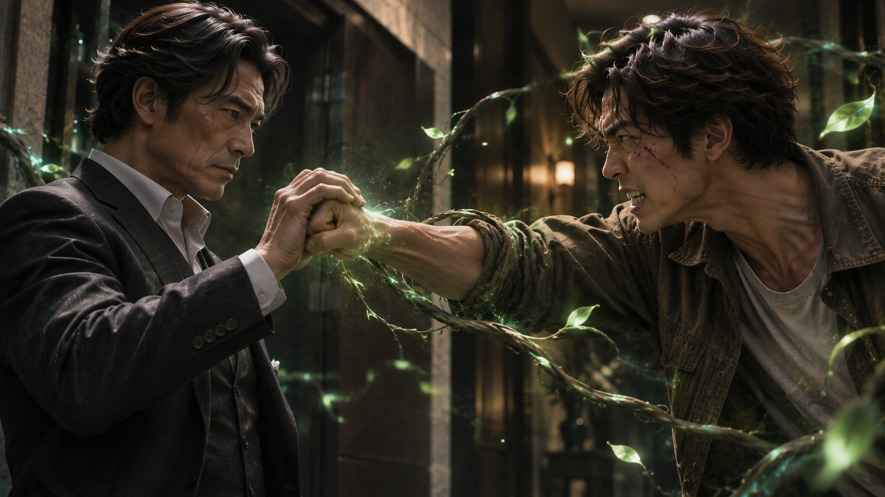

WHITE MAGIC ART STUDIO
第十四章
十年前的真相
桃園｜比克花店
夜深了。
比克花店一樓的燈只剩下櫃檯旁那盞還亮著。
碧雲蹲在地上，拿著抹布，一遍又一遍地擦拭木質地板。
水桶裡的水早已換過幾次。
她停下動作，看著地板上尚未完全褪去的痕跡，忍不住長長嘆了口氣。

「唉……怎麼又是這樣啊……」
明明下午還好好的。
昱鎧放學回來後，乖乖坐在櫃檯後幫忙找錢；景皓則照例上山照料花草。碧雲忙著整理要送出的花束，還得一一確認客人的訂單與配送時間。
誰知道，她才出門送貨幾個小時，竟然就帶著一個幾乎失去意識的男人回來。
更讓她震驚的是——
那個男人，竟然是景皓十年沒見的親弟弟，梁景毅。
明明就在稍早，她才興高采烈地打電話告訴景皓，今天花店來了一位意想不到的客人。
沒想到兄弟倆再次見面，竟然會變成這副模樣。
她回來後急忙追問發生了什麼事，景皓卻只匆匆丟下一句：
「他剛剛出了車禍，我帶他到我房裡休息！」
「車禍？那你還不趕快送醫院！」
「碧雲姐，我有辦法處理，妳先幫我顧一下昱鎧！」
「什麼叫你有辦法？景皓，你——」
話還沒說完，景皓已經又快步消失在二樓的樓梯轉角。
留下碧雲站在原地，急得連手裡的訂單都忘了放下。
她實在想不通。
出了這麼嚴重的車禍，不送醫院，反而把人帶回家急救？這到底是哪門子的道理？上次昱鎧發高燒也是。
偏偏景皓那副神情，又讓她一時不敢再追問。
認識他這麼多年，包含昱鎧那次也是，她還是第一次看見他如此慌張。
想到這裡，碧雲又嘆了一口氣。
她把抹布擰乾，望了一眼通往二樓的樓梯。
「唉……你們這一家人，到底還有多少事情瞞著我啊……」
「這家人啊……」
她搖搖頭，沒有把話說完。
二樓的另一間房裡，
昱鎧已經洗好澡，換上睡衣。
景皓交代他今晚先睡在碧雲的房間。
孩子躺在床上，頭髮還有些濕，整個人縮進棉被裡，只露出一雙黑溜溜的眼睛。
腦海裡，仍不斷浮現稍早在爸爸房間裡看見的景象。
那朵金色的花。
那些從爸爸掌心流出的光芒。
還有原本虛弱地躺在床上的叔叔，呼吸一點一點平穩下來的模樣。
直到一個禮拜前，他才知道，原來自己生活的家庭與其他人不太一樣。
原來爸爸是聖術師。
原來那些過去無法解釋的事情，都有著另一個答案。
可即使如此，親眼看見爸爸施展那麼不可思議的力量，昱鎧還是忍不住感到興奮。
爸爸真的好厲害……
他想起那些金色光芒，眼睛不自覺亮了起來。
但很快地，另一幅畫面又浮現在腦海裡。
是爸爸握著叔叔的手。
那時候，金色的光已經消失了。
爸爸卻沒有立刻離開，只是安靜地坐在床邊，望著熟睡的叔叔。
昱鎧從來沒看過爸爸露出那樣的表情。
明明叔叔已經沒事了，爸爸看起來卻還是很難過。
爸爸……真的很在乎他的弟弟吧？
昱鎧翻了個身。
可是，如果是這樣……
為什麼以前都沒有去找他呢？
他知道爸爸有家人。
也知道景瑜阿姨是爸爸的妹妹。
只是過去十年，爸爸與原本的家人之間，似乎始終隔著一道看不見的牆。
只有景瑜阿姨能和爸爸保持聯絡。
其他人不行。
昱鎧以前沒有特別想過這件事。
畢竟，那一直都是他所熟悉的生活。
直到今天。
過往偶爾在對談中的叔叔出現了，
而且，爸爸竟然會為了這個弟弟，露出那麼害怕失去他的表情。
既然那麼在乎……
為什麼要十年都不見面？
「昱鎧？」
碧雲推開房門。
「怎麼還沒睡？明天還要上學耶。」
昱鎧轉過頭。
「碧雲阿姨。」
「嗯？」
「你知不知道我爸爸……以前是不是有跟叔叔吵架了？」
碧雲微微一愣。
「怎麼突然問這個？」
「因為……」
昱鎧低頭捏著棉被。
「爸爸剛剛救叔叔的時候，看起來好擔心。」
他抬起頭。
「我覺得爸爸很在乎叔叔。」
碧雲沒有說話。
「可是，為什麼爸爸這十年只跟景瑜阿姨聯絡？」
昱鎧皺起眉頭。
「如果他那麼喜歡叔叔，為什麼都不去找他？」
碧雲望著眼前的孩子，沉默了片刻。
「……這個啊。」
她在床邊坐下，輕輕替昱鎧拉好棉被。
「有時候，大人就算很在乎一個人，也不一定知道該怎麼面對他。」
「為什麼？」
「因為有些事情，光是在意對方，還是不夠的，特別又是家人，更加麻煩！」
昱鎧似懂非懂地看著她。
碧雲笑了笑。
「不過啊，我想你爸爸今天應該很高興。」
「真的嗎？」
「嗯。」
她輕輕摸了摸昱鎧的頭。
「因為他終於讓他看到他的弟弟了。」
昱鎧想了一會兒。
「那……他們以後是不是就可以常常見面了？」
碧雲沒有立刻回答。
「希望是這樣囉。」
昱鎧點點頭，就在這時——
咚、咚。
樓下傳來兩聲輕輕的敲門聲。
碧雲皺起眉。
「這麼晚了，誰啊……」
她起身走向房門。
「昱鎧，乖乖躺著，不要起來喔。」
「好。」
門輕輕關上。
房間重新安靜下來。
重新躺回枕頭上。

二樓，景皓的臥室
房間裡只開著一盞床頭燈。
窗外的天色已經完全暗下來。
空氣裡還留著淡淡的花香味，以及尚未散盡的異樣氣味。
景毅被景皓換到自己的床上。
原本急促的呼吸，已經恢復平穩。
胸前只留下淺淺的痕跡，彷彿稍早發生的一切不過是一場噩夢。
床邊，景皓正低著頭。
他手裡拿著一塊乾淨的布，仔細擦拭著那只木盒。
那是存放神癒花的盒子。
如今，裡面已經空了。
景皓將布沿著盒蓋的邊緣慢慢擦過。
擦完一遍，又擦了一遍。
其實木盒早就乾淨了。
只是他似乎還沒有打算停下來。

「……梁景皓？」
一聲沙啞的呼喚，讓他的手微微一頓。
景皓立刻抬頭。
「嘿？」
床上的男人緩緩睜開眼睛。
他眨幾下，才終於看清眼前的人。
「……這裡是哪？」
「我家。」
景皓放下木盒，湊近床邊。
「你醒啦。」
他說得很輕，像是怕聲音稍微大一點，就會把眼前這份安穩驚醒。
「有沒有哪裡不舒服？頭會暈嗎？」
景毅皺著眉，試圖撐起身體。
「先別亂動。」
景皓立刻扶住他的肩膀。
「你的上衣都是血，我已經幫你脫掉了。會冷嗎？我拿件衣服給你。」
「不用……」
景毅低頭看向胸口。
原本那道令他幾乎失去意識的傷，竟然只剩下一點淡淡的疤痕。
他怔住了。
隨後，像是突然想到什麼，猛地抬起頭。
「梁景皓。」
「嗯？」
「你該不會……」
景毅看向床邊的木盒。
「用了神癒花救我吧？」
景皓沒有回答。
他只是伸手，將木盒輕輕闔上。
喀。
一聲很輕的聲響。
景毅卻覺得胸口忽然沉了下去。
「那是……」
他的聲音微微發顫。
「那可是世上僅存的……」
「景毅。」
景皓打斷了他。
他望著弟弟，眼裡沒有半分猶豫。
「而你……也是我僅存的弟弟啊。」
房間安靜了下來。
景毅張了張嘴，卻發不出聲音。
下午在石門山，他還一心想著要打倒眼前這個人。
十年的不甘、怨恨與嫉妒，讓他幾乎忘了自己究竟是為了什麼而追上山。
可當他真正陷入危險時，景皓卻沒有丟下他。
不只如此。
哥哥甚至拿出了那朵誰也無法輕易取代的神癒花。
景毅把臉轉向另一邊。
「……白痴。」
景皓一愣。
「蛤？」
「我說你是白痴。」
景毅的聲音悶悶的。
「那種東西……怎麼可以隨便用掉……」
景皓望著他。
半晌，才輕輕笑了一聲。
「你從小就很會酸人。」
「明明是你比較會。」
「有嗎？」
「有。」
兩人沒有再說話。
這段短暫的沉默，卻比任何解釋都讓人安心。
過了一會兒，景毅清了清喉嚨。
「對了。」
「嗯？」
「你之前提到的昱鎧……」
他猶豫了一下。
「該不會是……」
景皓點點頭。
「我兒子。」
景毅整個人僵住。
「……蛤？」
景皓終於露出一點真正的笑意。

「他今年十歲，國小四年級。」
「十……十歲？」
「嗯。」
「所以……」
景毅看著哥哥，像是在重新計算這十年究竟發生了什麼。
「我當叔叔了？」
「驚喜吧？」
「這哪叫驚喜啊！」
景毅忍不住提高音量，又因為身體尚未完全恢復而皺起眉頭。
景皓連忙示意他躺好。
「小聲一點，他在隔壁房間。」
「你還知道要小聲！」
景毅瞪著他。
「這麼大的事，你竟然一句都沒說！」
「妹知道。」
「景瑜？你只告訴她？」
景皓沒有反駁。
景毅本來還想繼續說。
可看見哥哥的表情，他忽然停住了。
他自己也知道他們兄弟倆再過去像是最熟悉的陌生人，
只告訴自已的小妹本來就是很正常的。
景皓的笑容仍在。
卻有些勉強。
「……所以。」
景毅慢慢問。
「你這十年消失，就是為了藏這個孩子？」
景皓垂下眼。
「不完全是。」
「那到底是怎樣？」
景毅皺眉。
「我不記得你以前有跟誰交往啊。」
景皓沉默了一會兒。
「……你還記得瑞雯嗎？」
「瑞雯？」
景毅想了想。
「我們班那個瑞雯？」
「嗯。」
「等等。」
景毅猛地看向哥哥。
「你該不會是說——」
「先說喔。」
景皓舉起雙手，像是早就預料到他的反應。
「嚴格來講，是她灌醉我的。」
「什麼？！」
「我們不是你想像的那種關係。」
景皓無奈地嘆了口氣。
「事情有點複雜。」
他望向窗外。
夜色映在玻璃上，映出自己模糊的倒影。
「她告訴我懷孕的時候……我真的不知道該怎麼辦。」
景毅安靜了下來。
「我想了很久。」
景皓低聲說。
「最後，還是決定先告訴爸。」
他停了一下。
「結果……」
十年前｜美國
「拿掉。」
電話另一端，梁晉輝的聲音平靜得近乎冷淡。
「把孩子拿掉。」
景皓握著手機，站在宿舍外的走廊。
窗外是陌生城市的夜景。
遠處車流不斷，玻璃映出他年輕的臉。
他原本準備了很多話。
關於瑞雯。
關於孩子。
關於自己已經想過的各種可能。
甚至連接下來的學業、聖術師訓練，以及如何承擔責任，他都試著安排過。
只是那些計畫沒有一項真正讓他安心。
他原以為，父親至少會先聽他說完。
「……什麼？」
景皓低聲問。
「龍兒，你聽我說。」
晉輝的語氣依然沉穩。
「你現在正處在最重要的階段。你必須好好正視自己的使命，而不是突然多出另一個身分。」
景皓低下頭。
他看著手裡那張被反覆折過的紙。
上面密密麻麻寫著幾行字。
學業。
訓練。
瑞雯。
孩子。
回台灣。
每一項後面，他都試著寫下解決辦法。
但寫到最後，紙張下半部只剩下一片空白。
「……果然。」
他忽然笑了一聲。
「什麼？」
「果然是你會說的話。」
景皓的笑意很快消失。
「你連問都沒問，就直接替我決定了。」
「這不是替你決定，是你必須理解現在的處境。」
「我很清楚我的處境！」
他的聲音陡然拔高。
走廊另一端，有學生回頭看了他一眼。
景皓立刻壓低聲音，卻無法壓住胸口的起伏。
「你知道我這幾天想了多少辦法嗎？」
「龍兒——」
「我知道我還沒準備好。」
他咬緊牙。
「我知道這會影響很多事情，我也知道瑞雯現在很害怕！」
電話那端沉默了一瞬。
景皓握緊手機。
「可是……」
他停住了。
那句話卡在喉嚨裡。
他其實很想問父親。
我也很害怕，這樣不行嗎？
但他說不出口。
從小到大，遇到問題時，他最常聽見的不是「你還好嗎」。
而是「龍兒，你應該知道怎麼做」。
他也一直以為，自己真的應該知道。
「你有沒有想過……」
景皓的聲音開始發抖。
「我從頭到尾都沒有選擇的機會！」
「梁景皓——」
「這個小孩也是！」
他終於吼了出來。
「『木翼』也是！」
走廊裡的聲音彷彿突然遠去。
「當你的小孩也是！」
電話另一端傳來晉輝錯愕的聲音。
「梁景皓！你怎麼可以這樣說——」
嘟。
景皓掛斷了電話。
四周重新安靜下來。
他站在原地，久久沒有動。
過了一會兒，他低頭看向那張紙。
紙上的字跡因為反覆修改，已經有些模糊。
他盯著「孩子」那一欄。
原本寫在旁邊的，是一個被圈起來的問號。
景皓伸手，將那張紙揉成一團。
卻沒有丟掉。
他只是緊緊握著。
直到紙張在掌心皺得再也攤不平。
回到宿舍時，已經很晚了。
景毅正坐在書桌前，面前攤著厚厚一疊文件。
距離畢業只剩下不久。
學校的結業程序、最後幾項訓練評核，以及返台前必須完成的各種手續，讓這段時間的宿舍幾乎天天堆滿資料。
景皓推門進來。
景毅只是抬眼看了一下，隨即繼續整理桌上的文件。
「回來了喔。」
「嗯。」
景皓走向床邊，拉出行李箱。
拉鍊聲在安靜的房間裡顯得格外清楚。
景毅的筆停了一下。
他回頭看見哥哥正在收拾衣服，微微皺眉。
「……你要去哪？」
「回台灣一趟。」
「現在？」
「嗯。」
景毅看了一眼桌上的行事曆。
「不是快畢業了嗎？」
景皓沒有回答，繼續把衣服放進行李箱。
「下禮拜還有最後的評核，畢業文件也還沒全部處理完。」
景毅的語氣平淡，像是在提醒一件大家都應該知道的事。
「你自己記得處理，別到時候又要學校幫你補程序。」
「我知道。」
「還有，宿舍退房的資料好像也快截止了。」
「嗯。」
景毅看著哥哥。
景皓的回答簡短得近乎敷衍。
不過他也沒有繼續追問。
反正哥哥向來都有自己的安排。
從小到大，不管是學業、訓練，還是那些令人厭煩的責任，景皓總能處理得比別人更好。
至少在其他人眼裡，一直都是如此。
景毅轉回書桌。
「隨便你。」
他翻過一頁文件。
「反正別影響到畢業就好。」
景皓收拾行李的動作微微停住。
他望著弟弟的背影。
書桌前的景毅依然專注地核對資料，沒有再回頭。
兩人明明住在同一個房間。
卻已經很久沒有真正聊過天。
景皓低下頭，將最後一件衣服放進行李箱。
「……我走了。」
「喔。」
景毅頭也沒抬。
「路上小心。」
那句話說得很自然。
像是多年共同生活養成的習慣。
沒有特別的關心，也沒有挽留。

景皓提起行李箱，走向門口。
他的手握住門把。
停了一瞬。
身後傳來紙張翻動的聲音。
景毅似乎又開始核對下一份文件了。
景皓終究沒有回頭。
喀。
門輕輕關上。
景毅繼續寫著手上的資料。
過了一會兒，他才忽然發現，宿舍裡比平常安靜了些。
他抬頭看了一眼對面的空床。
「……說走就走。」
景毅低聲嘀咕。
隨即重新埋首於文件之中。
他並不知道——
那句平淡的「路上小心」，竟會成為他與哥哥在接下來十年間，最後一次面對面的日常對話。
台灣｜梁家大宅
景皓回到台灣後，沒有先去找父親。
他想見的是母親。
慧萍。
比起電話，他更想坐在母親面前，好好把事情說清楚。
他甚至在回程的飛機上，反覆想過該怎麼開口。
或許母親會生氣。
或許會責備他不夠謹慎。
但至少，她會願意聽他說完。
景皓走進梁家大宅。
「媽？」
沒有人回應。
他穿過客廳，走向後方的花院。
「媽，我回來了。」
屋裡安靜得異常。
平常這個時間，母親總會在花院整理植物，或坐在窗邊看書。
可今天，花院裡空無一人。
景皓走回屋內。
他找過客廳、書房、廚房。
甚至連母親平常不太會去的房間都看了一遍。
始終沒有找到人。
終於，他在走廊上攔下一名梁家班成員。
「我媽呢？」
對方一愣。
「大、大少爺？」
「我問你，我媽在哪？」
「夫人她……」
那人目光閃躲。
「我也不太清楚。」
景皓看著他。
一抹翠綠色微光，自虹膜深處亮起。
木瞳術——共感。
眼前男人的情緒瞬間變得清晰。
緊張。
恐懼。
還有一股強烈的抗拒。
他知道些什麼。
「你在說謊。」
景皓的聲音沉了下來。
「大少爺，我……」
「我媽到底在哪裡？」
「我真的不能說！」
對方幾乎快哭出來。
「我是被下令的……求求您，別為難我了！」
景皓愣住。
被下令？
他緩緩鬆開對方的衣領。
「……誰下的令？」
那人沒有回答。
但那份恐懼，已經足夠清楚。
景皓往後退了一步。
「好。」
他低聲說。
「你不說，我自己找。」
他單膝跪地。
雙掌貼上地板。
下一瞬間，淡綠色的光紋沿著地面迅速擴散。
花院裡的藤蔓輕輕顫動。
窗邊的盆栽舒展葉片。
屋外的樹根沿著泥土延伸，與宅邸周圍的植物交織成一片龐大的生命網絡。
景皓閉上眼睛。
木之元素使的聖術能量，順著那些植物向四面八方擴散。
他感受到花院裡潮濕的土壤。
感受到牆角的苔蘚。
感受到埋藏在老宅地底的細小根鬚。
一層。
又一層。

直到某個地方——
所有感應突然變得異常。
像有什麼東西，刻意阻斷了植物原本的生長方向。
景皓猛地睜開眼睛。
「……地下室。」
他起身奔向地底。
穿過一條又一條幽暗走廊。
最後，停在一堵看似普通的牆前。
牆面後方，隱約傳來熟悉的木系聖術氣息。
景皓伸出手。
「……忘憂木？」
他認得這股力量。
那是父親的術之木。
景皓的呼吸開始急促。
「爸……？」
沒有人回答。
他將手掌貼上牆面。
青綠色的聖術光芒瞬間聚集。
砰！
隱藏的門鎖被震開。
景皓推門而入。
一股濃烈的藥草與枯木氣息迎面撲來。
房間深處，坐著一名女子。
她的頭髮凌亂地垂在臉側。
手腳被青藍色的忘憂木藤枝固定在椅子上。
原本溫柔熟悉的面容，此刻憔悴得幾乎認不出來。

景皓停住了腳步。
「……媽？」
女子緩緩抬頭。
她的目光游移了一會兒，才終於落在他身上。
「景……皓？」
她的聲音很輕。
「是你嗎……？」
景皓的喉嚨像被什麼堵住。
「媽……」
他快步走上前。
「你怎麼會在這裡？」
他伸手碰了碰那些藤枝。
冰冷的青藍色光芒，讓他心頭一沉。
「這是爸的聖術……」
景皓抬起頭。
「爸對你做了什麼？」
慧萍卻沒有回答。
她只是看著他，眼神忽然變得驚恐。
「你不能……」
「媽？」
「你不該來……」
她的聲音越來越急。
「快走……景皓，你快走！」
「媽，沒事，我來帶你出去。」
景皓伸手想解開藤枝。
「你不要怕，我會——」
「走啊！」
慧萍突然尖叫。
她的身體劇烈顫抖。
原本熟悉的氣息瞬間被一股陰冷而混亂的力量覆蓋。
她的眼神變得陌生，整個人猛地向前掙扎。
景皓僵在原地。
「……媽？」
他下意識伸手想扶住她。
卻在觸碰到那股氣息的瞬間，感受到一種難以形容的恐懼。
那不是普通的情緒波動。
更像是某種東西，正與母親原本的意識互相拉扯。
「媽！你怎麼了！」
下一秒——
唰！
數條忘憂木藤枝突然竄起！
景皓還來不及反應，腰間便被藤枝纏住。
整個人猛地被拖向門外！
砰！
他重重摔在地上。
景皓撐起身體，抬頭望去。
密室門前，站著一個熟悉的身影。
梁晉輝。
父親垂眼看著他。
臉上沒有任何表情。
「……爸？」
景皓喘著氣。
「你……」
他回頭看了一眼密室。
又看向父親。
「你對媽做了什麼？」
晉輝沒有回答。
「你到底對她做了什麼！」
「你不該來這裡。」
晉輝的聲音冷得像冰。
景皓愣住。
「……什麼？」
「回去。」
「爸，你沒聽到我問什麼嗎？」
景皓站了起來。
「媽到底怎麼了？是不是被惡魔影響了？」
他往前一步。
「如果是的話，我也可以幫忙。我現在已經——」
「這不關你的事！」
晉輝的聲音猛然提高。
景皓停住。
他望著父親。
像是第一次聽不懂這個人說的話。
「……不關我的事？」
晉輝沉默。
「她是我媽。」
景皓的聲音很輕。
「你說這不關我的事？」
「龍兒，你現在最重要的事情，不在這裡。」
晉輝的語氣重新恢復平穩。
「你必須盡快成為木翼，守護這塊土地，不要再讓更多悲劇發生。」
景皓沒有動。
木翼。
又是木翼。
他忽然想起幾個小時前的電話。
想起自己還沒來得及說完的話。
想起那張被揉皺的紙。
也想起母親剛才看著自己的眼神。
「……都到這個時候了。」
景皓慢慢開口。
「你還在跟我說這個？」
晉輝皺眉。
「龍兒。」
「我從美國趕回來，是因為我不知道該怎麼辦。」
景皓的聲音越來越低。
「我想找媽談談。」
他看向那扇緊閉的密室門。
「我以為……至少她會願意聽我說。」
晉輝的眼神微微一動。
但景皓沒有看見。
「結果呢？」
景皓笑了一聲。
那笑聲裡沒有半點愉快。
「你把她關在這裡。」
「事情不是你想的那樣。」
「那你告訴我啊！」
景皓猛地抬頭。
「你告訴我到底發生什麼事！」
晉輝沉默了。
景皓等著。
一秒。
兩秒。
三秒。
父親始終沒有回答。
那份沉默，比任何責備都讓他難以忍受。
「……我懂了。」
景皓緩緩點頭。
「你根本不在乎。」
「龍兒，現在不是——」
「你只在乎木翼。」
景皓打斷他。
「只在乎梁家，只在乎那些你要我完成的事情。」
他一步步走近父親。
「我做得再多，也永遠不夠。」
晉輝的眉頭越皺越深。
「你現在情緒太激動了。」
景皓忽然停下。
他低頭看著自己的雙手。
這雙手曾經被許多人稱讚過無數次。
也使用它們治療了多少的戰友，
消滅了多少的惡魔，
父親說他有能力承擔更多責任。
可現在，他站在這裡。
連自己的母親都無法帶走。
景皓緩緩握緊拳頭。
「……對。」
他低聲說。
「我現在就是很激動。」
翠綠色的光芒，開始在他虹膜深處閃動。
「因為我真的受夠了。」
周圍的盆栽劇烈搖晃。
細小的根鬚從地板縫隙間鑽出。
「從小到大，你要我做什麼，我就做什麼。」
景皓的聲音開始顫抖。
「你要我當榜樣，我就當。」
藤蔓沿著牆面迅速攀升。
「你要我保護別人，我就去保護。」
空氣中，花粉與葉片被聖術能量捲起。
「你要我成為木翼——」
他猛地抬起頭。
「我就連自己想要什麼，都不敢去想！」
晉輝的表情終於變了。
「龍兒，停下來。」
「你這個人渣……」
景皓的聲音幾乎是從牙縫裡擠出來的。
「這一切……」
他握緊拳頭。
「都是你的錯！！」
轟！
聖術能量猛然爆發！
無數根莖、花葉與藤蔓瞬間聚集在景皓周圍。
細緻的翠綠色光脈沿著手臂延伸。
他抬起頭。
眼裡既有憤怒，也有難以壓抑的淚光。
「讓開！」
景皓怒吼。
「我來救媽！」
他猛地衝向晉輝！
拳頭帶著聚集而來的木系聖術，直取父親面門！
然而——
啪！
晉輝只是抬起一隻手。
穩穩接住了那一拳。
兩股力量在掌間碰撞，震得地板裂開一道細痕。
景皓瞪大眼睛。

「……！」
晉輝看著他。
「怒氣遮蔽了你的信仰。」
他的聲音平穩得可怕。
「你變弱了。」
景皓的呼吸猛地一滯。
那句話落下時，他甚至忘了繼續出力。
變弱了。
他望著父親。
彷彿又回到了年少時那些訓練的日子。
明明已經做到最好。
明明已經拼盡全力。
卻總覺得還有什麼地方不夠。
景皓咬緊牙關。
「……閉嘴。」
他猛地抽回拳頭。
身影瞬間向側面閃去！
數條藤枝從地面竄起，分別攻向晉輝的肩膀與雙腿！
晉輝側身避開。
藤枝擦過他的衣角，狠狠撞上後方牆面！
砰！
碎屑四散。
景皓緊接著逼近。
一拳。
兩拳。
連續數招，幾乎沒有留下喘息的空隙。
晉輝卻始終沒有反擊。
他只是移動腳步。
抬手。
側身。
用最小的動作，化解景皓每一次進攻。
景皓越打越急。
每當父親避開一招，他便立刻補上另一招。
那些原本精準的動作，開始失去節奏。
原本能夠細膩控制的藤枝，也逐漸變得躁動。
景皓明明察覺到了。
卻沒有停下。
他不能停。
至少現在不能。
「為什麼……！」
景皓怒吼著揮出一拳。
晉輝側身避開。
「為什麼你永遠都是這樣！」
又一拳！
晉輝抬手擋下。
「我做什麼都不對！」
景皓轉身，掌心凝聚的聖術猛然轟向牆面！
轟！
牆面裂開。
塵煙瀰漫。
景皓站在原地，胸口劇烈起伏。
他的手指微微發抖。
翠綠色的光芒忽明忽暗。
晉輝站在塵煙另一端。
依然沒有出手。
「龍兒。」
他緩緩開口。
「如果你的力量來自信仰——」
景皓抬起頭。
「那你現在的信仰呢？」
景皓怔住了。
他想反駁。
想告訴父親，自己從來沒有忘記身為聖術師的使命。
想告訴他，自己一直都在努力。
可是話到了嘴邊，卻突然變得支離破碎。
他想起瑞雯。
想起尚未出生的孩子。
想起那張寫滿計畫的紙。
想起景毅站在宿舍冷漠的樣子。
想起長期在韓國很久沒聯絡的景瑜。
最後，想起密室裡母親那張憔悴的臉。
所有事情彷彿同時壓在他的肩上。
景皓緩緩抬起拳頭。
卻發現自己已經沒有力氣再揮出去。
「……你為什麼……」
他的聲音沙啞得幾乎聽不清楚。
晉輝望著他。
「……可以這麼冷血……」
景皓的眼淚終於落了下來。
他不想哭。
尤其不想在父親面前哭。
可是越想忍住，眼淚就越是不受控制。
「我只是……」
他低下頭。
「我只是想找個人……」
話說到一半，便再也說不下去。
走廊裡只剩下他急促的呼吸聲。
晉輝的手微微動了一下。
像是想伸向兒子。
最後，卻仍停在原處。
景皓沒有看見。
他只是站在那裡，許久、許久。
然後，慢慢轉過身。
朝樓梯的方向走去。
「龍兒。」
晉輝叫住他。
景皓停下腳步。
卻沒有回頭。
「……」
父親似乎還想說什麼。
但最後，什麼都沒有說。
景皓等了一會兒。
隨後，繼續往前走。
一步。
又一步。
直到他的身影消失在走廊盡頭。
那一夜，他離開了梁家大宅。
也再沒有回去。
整整十年。